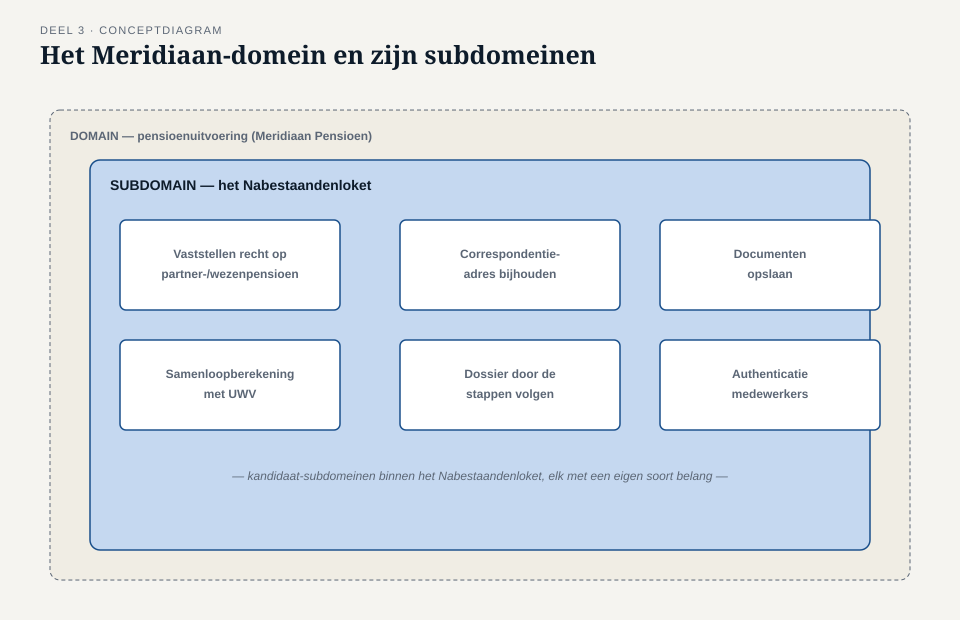
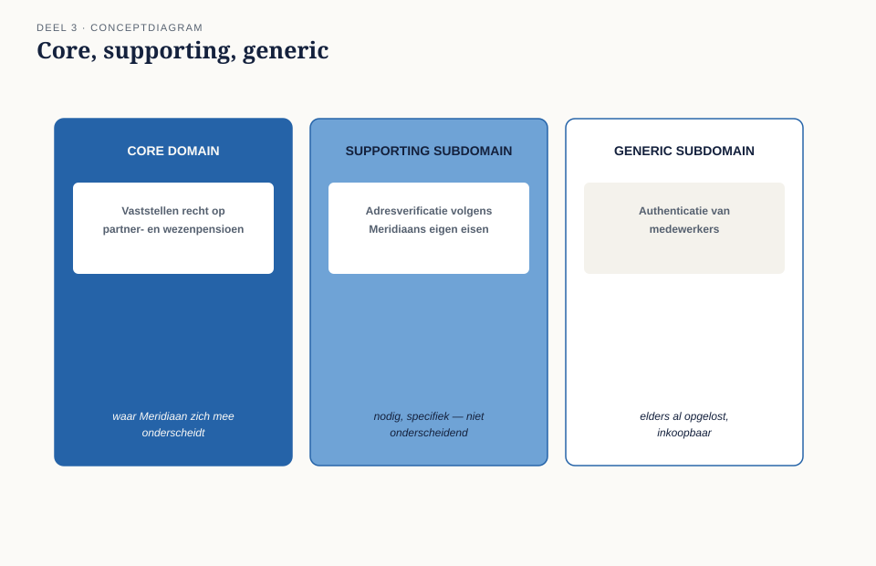
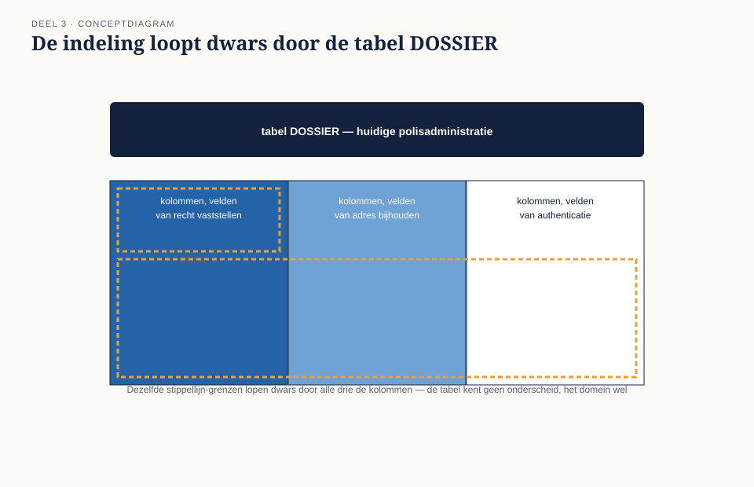
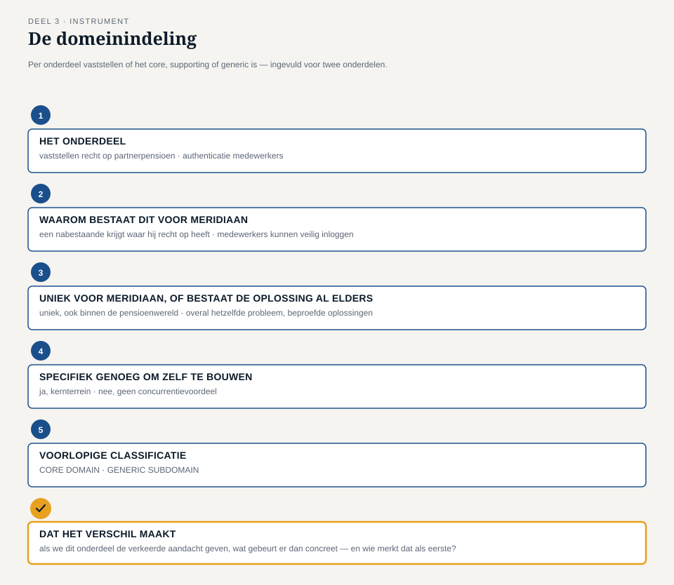

Deel 3 — Domain, subdomain: core, supporting, generic
Slidedeck · Ductus-cursus Domain-Driven Design · niveau 1 · deel 3 van 30 · 28 slides
Slide 1 — Titel
Domain-Driven Design — deel 3 Domain, subdomain: core, supporting, generic Niveau 1: fundament · voorbereiding op de iSAQB Advanced-module DDD
Slide 2 — Terugblik deel 1 en 2
Deel 1: de complexiteitstoets — welk onderdeel verdient de investering? Deel 2: de taalkaart — “melding” en “dossier” scherp gekregen.
Nu: het Nabestaandenloket is meer dan dit ene onderdeel.
Slide 3 — Een vraag om mee te beginnen
Je krijgt één dag extra tijd voor het Nabestaandenloket. Geen minuut meer.
Aan welk van de zes onderdelen besteed je die dag — en waarom niet aan de andere vijf?
(Antwoorden op de flap. We komen er aan het eind van dit deel op terug.)
Slide 4 — Waar we het over gaan hebben
- Wat een domain en een subdomain zijn
- Core domain, supporting subdomain, generic subdomain
- De domeinindeling: wat verdient welke aandacht?
- Daans lijst van zes punten
Slide 5 — Daans lijst
- Vaststellen recht op partner-/wezenpensioen (samenloop)
- Correspondentieadres bijhouden
- Opslag geüploade documenten
- Samenloopberekening met UWV
- Authenticatie medewerkers
- Toekennings-/afwijzingsbrief
“Beginnen we bij het begin, of pakken we ze parallel?”
Slide 6 — Rutgers tegenwerping
“Je behandelt dit alsof het allemaal even zwaar is. Adressen bijhouden en vaststellen wie recht heeft bij twee claims tegelijk — dat kun je toch niet in één adem noemen?” — Rutger Zeeman
Slide 7 — Willemijns antwoord
“Ik heb geen enkele behoefte aan een prachtig domeinmodel voor een adres. Ik heb wél behoefte aan een team dat alle tijd neemt voor de vraag wie recht heeft op wat.” — Willemijn Brugman
Slide 8 — Tijmens conclusie
“Sommige van die dingen zíjn waarom Meridiaan dit project doet. Andere zijn nodig om het eerste te laten werken. En weer andere zijn al lang elders opgelost.” — Tijmen Oosterhuis
Slide 9 — Wat een domain is
Het hele vakgebied waarvoor een organisatie software bouwt. Bij Meridiaan: pensioenuitvoering. Te groot om in één keer te modelleren.
Slide 10 — Wat een subdomain is
Een afgebakend deel van het domein met een eigen samenhangend stuk werk.
Het Nabestaandenloket is al een subdomain — en bevat er zelf weer meerdere.
Slide 11 —

Het Meridiaan-domein, het Nabestaandenloket erbinnen, en Daans zes punten als kandidaat-subdomeinen
Slide 12 — Drie soorten subdomeinen
Core domain — waar de organisatie zich mee onderscheidt Supporting subdomain — nodig, specifiek, niet onderscheidend Generic subdomain — elders al opgelost, vaak inkoopbaar
Slide 13 —

Drie vlakken — core, supporting, generic — elk met één voorbeeld uit het Nabestaandenloket
Slide 14 — Core domain bij het Nabestaandenloket
Vaststellen recht op partner- en wezenpensioen, incl. samenloop. Uniek voor Meridiaan. Waar nabestaanden op vertrouwen. Scoorde in deel 1 hoog op alle vier de assen.
Slide 15 — Supporting en generic bij het Nabestaandenloket
Supporting: adresverificatie, dossier door de eigen processtappen. Generic: authenticatie, documentopslag-infrastructuur.
Fatsoenlijk bouwen — niet de zwaarste inspanning.
Slide 16 — Niet hetzelfde als de bestaande systeemgrenzen
Tabel DOSSIER behandelt recht vaststellen
en een adres bijwerken met dezelfde onzorgvuldigheid.
Core, supporting en generic lopen dwars door de techniek heen.
Slide 17 —

Tabel DOSSIER met een stippellijn die laat zien
hoe core/supporting/generic er dwars doorheen lopen
Slide 18 — De werkvorm van dit deel
De domeinindeling
Per onderdeel: core, supporting of generic — en wat dat betekent voor de aanpak.
Slide 19 — De velden
Het onderdeel Waarom bestaat het voor Meridiaan? Uniek, of elders al opgelost? Specifiek genoeg om zelf te bouwen, zonder onderscheidend te zijn? Voorlopige classificatie
Slide 20 — Twee vragen die de indeling bepalen
“Uniek of elders al opgelost?” — scheidt core van generic. “Specifiek genoeg om zelf te bouwen?” — scheidt supporting van generic.
Slide 21 — Veld 5: het veld dat het verschil maakt
Als we dit onderdeel de verkeerde aandacht geven,
wat gebeurt er dan concreet — en wie merkt het als eerste?
Slide 22 —

Het invulblad — ingevuld voor “rechtvaststelling” (core) en “authenticatie” (generic)
Slide 23 — Wat het team ontdekt
Core: recht vaststellen bij samenloop. Supporting: adresverificatie, dossierstappen. Generic: authenticatie, documentopslag.
De UWV-samenloop: “supporting, met een aantekening.”
Slide 24 — Het gesprek over de UWV-samenloop
Saïda: Meridiaan voert de Anw niet zelf uit. Willemijn: de kennis erover ligt dicht tegen het core domain aan.
Beiden hebben gelijk — over verschillende dingen.
Slide 25 — Rutgers les
“Als we authenticatie bouwen met evenveel zorg als de rechtvaststelling, ben ik over drie maanden trots op een inlogscherm en heeft niemand naar de samenloopregels gekeken.” — Rutger Zeeman
Slide 26 — Opdracht 3
Voer de domeinindeling uit op drie eigen onderdelen: één core, één supporting, één generic.
(25 minuten, individueel)
Slide 27 — De module
Voorbereidend op: domain, model en ubiquitous language (iSAQB Advanced-module DDD, methodologisch gebied)
Deze indeling komt terug op landschapsschaal in deel 12.
Slide 28 — Volgende keer
Deel 4 — het model versus de implementatie: Daan levert een eerste technisch model op. Willemijn herkent er weinig van terug.